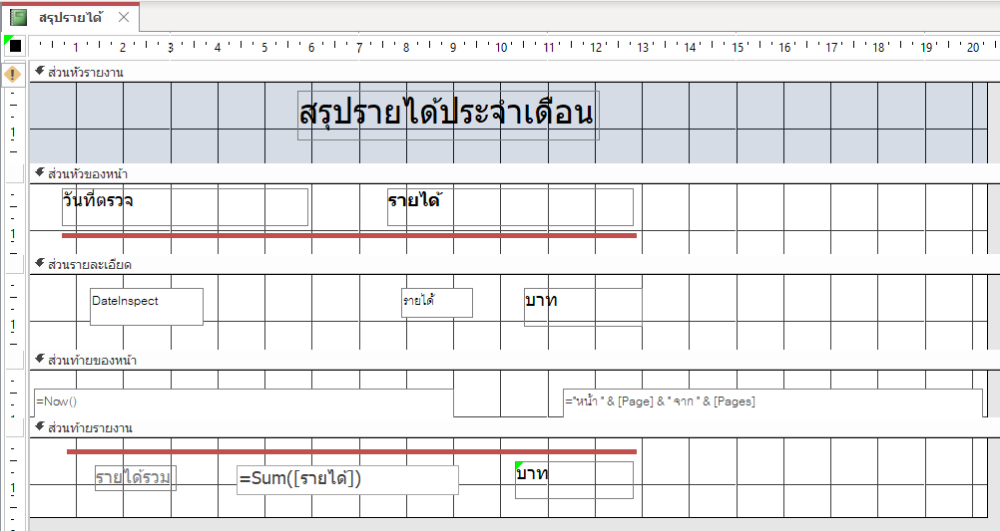
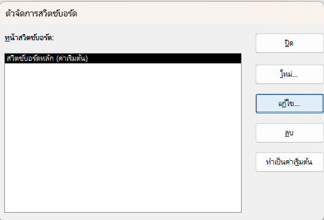
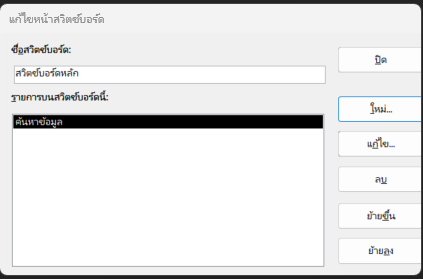

1.ขั้นตอนการพัฒนางานด้วย Access
การพัฒนาระบบฐานข้อมูล จะมีขั้นตอนในการพัฒนางาน ดังนี้
ขั้นตอนที่ 1 การวิเคราะห์ความต้องการ
เป็นขั้นตอนแรกในการพัฒนางาน โดยผู้พัฒนาจะสอบถามและจัดเก็บข้อมูลความต้องการและรายละเอีอดต่าง ๆ เพื่อนำมาใช้ในการวิเคราะห์และออกแบบบานข้อมูล โดยวิธีพูดคุยกับผู้บริหารและผู้ใช้งาน เพื่อให้ทราบจุดประสงค์ที่ต้องการด้านความปลอดภัยในการใช้ฐานข้อมูลจากนั้นทำการรวบรวมข้อมูล และรายงานในระบบงานเดม
ขั้นตอนที่ 2 การออกแบบและพัฒนาฐานข้อมูล
การออกแบบบานข้อมลนับเป็นส่วนที่มีความสำคัญ หากออกแบบไม่ถูกต้องหรืไม่ครบถ้วนอาจทำให้เกิดความยุ่งยากในการแก้ไขเปลี่ยนแปลงข้อมูลภายหลังได้ สำหรับขั้นตอนการออกแบบฐานข้อมูลและพัฒนาด้วยโปรแกรม Microsoft Access มีดังนี้
1. เขียน E-R Diagram เพื่อใช้เป็นแม่แบบในการสร้างระบบบานข้อมูล
2. นำ E-R Diagram ที่ออกแบบ มาแปลงเป็นโครงสร้างขขของตาราง โดยพิจรณาชนิดของเขตข้อมูลให้เหมาะสมกับข้อมูลที่จัดเก็บ และกำหนดคีย์หลัก ( Primary Key ) ของตาราง พร้อมทั้งกำหนดรายละเอียดต่างๆ ของตาราง เช่น ค่าเริ่มต้นของข้อมูล รูปแบบการรับข้อมูล และการแสดงผล เป็นต้น
3. สร้างความสัมพันธ์ระหว่างตาราง
4. ป้อนข้อมูลหรือนำเข้าข้อมูลในตาราง
5. สร้างคิวรี เพื่อจัดการข้อมูลตามความต้องการ
6. สร้างแบบฟอร์มติดต่อผู้ใช้งาน
7. สร้างรายงานตามความต้องการของผู้ใช้งาน
8. เขียนมาโคร หรือ VBA เพื่อควบคุมการทำงาน
9. สร้างเมนู เพื่อความสะดวกต่อการใช้งาน
ขั้นตอนที่ 3 การทดสอบการใช้งาน
หลังจากสร้างงานเสร็จเรียบร้อยแล้ว ต้องทำการทดสอบระบบงานที่พัฒนา โดยนำข้อมูลที่รวบรวมจากระบบเดิมมาทดลองและตรวจสอบผลลัพธ์ เพื่อให้เกิดความมั่นใจและแก้ไขส่วนที่บกพร่อง
ขั้นตอนที่ 4 การติดตั้งใช้งาน
เป็นขั้นตอนในการนำระบบงานฐานข้อมูลที่ทดสอบเรียบร้อยไปติดตั้งเพื่อใช้งานจริง
ขั้นตอนที่ 5 การรวบรวมเอกสาร
เป็นขั้นตอนรวบรวมจัดเก็บเอกสารต่าง ๆ ในการพัฒนางาน
ขั้นตอนที่ 6 การบำรุงรักษา
เป้ฯขั้นตอนในการดูแลแก้ปัญหาให้กับผู้ใช้งาน รวมไปถึงรวบรวมความคิดเห็นและข้อเสนอแนะต่าง ๆ จากผู้ใช้งานเพื่อนำมาปรับปรุงงานในโอกาสต่อไป
2.ตัวอย่างการพัฒนางานฐานข้อมูล
ตัวอย่างต่อไปนี้เป็นตัวอย่างการพัฒนางานฐานข้อมูลเพื่อนำไปใช้ในระบบงานคลินิก เพื่อเป็นแนวทางในการพัฒนางานฐานข้อมูลขั้นต้นด้วย Microsoft Access
2.1 การวิเคราะห์ความต้องการ
คลินิกของนายพิพัฒน์ มีปัญหาการค้นบัตรคนไข้ เนื่องจากคนไข้ส่วนใหญ่ที่มาใช้บริการตรวจรักษาไม่ได้นำบัตรประจำตัวผู้ป่วยที่คลินิกออกมาให้ด้วย ทำให้เสียเวลาในการค้นหาบัตร ดังนั้นจึงต้องการพัฒนาโปรแกรมช่วยงานเพื่อให้เกิดความรวดเร็วในการทำงาน โดยมีจุดประสงค์ในการพัฒนางาน คือ เพิ่มควารวดเร็วในการค้นหาเลขบัตรประจำตัวของผู้ป่วยที่เข้ามาใช้บริการ และจักเก็บข้อมูลการรักษาในแต่ละครั้ง
2.2 การออกแบบฐานข้อมูลด้วย E-R Diagram
จากการเก็บรวบรวมข้อมูลและการสอบถามความต้องการจากผู้ใช้งาน ได้พิจรณาออกแบบการจัดเก็บข้อมูลเป็น 2 ตาราง คือ
1.ตารางข้อมูลคนไข้ (Custom) เพื่อเก็บข้อมูลส่วนตัวของคนไข้ที่มาใช้บริการ
2.ตารางข้อมูลการตรวจรักษา (Inspect) เพื่อจัดเก็บข้อมูลการตรวจรักษาในแต่ละครั้งโดยเขียนเป็น E-R Diagram
2.3 แปลงเป็นตารางข้อมูลใน Access
1.สร้างไฟล์ฐานข้อมูล Clinic ใน Access ตาม E-R Diagram ที่ออกแบบ
2.สร้างตาราง Custom เพื่อเก็บข้อมูลคนไข้
ตารางข้อมูลคนไข้ (Custom)
โดยกำหนดรายละเอียดของเขตข้อมูลในตาราง ดังนี้
1. กำหนดคุณสมบัติ ป้ายอธิบาย ของเขตข้อมูลต่าง ๆ ตามข้อความ คำอธิบาย
2. กำหนดให้เขตข้อมูล CusID เป็น คีย์หลักตาราง
3. กำหนดเขตข้อมูล Title เป็นตัวช่วยสร้างการค้นหา (Lookup Wizard) แบบป้อนคำรายการ โดยกำหนดรายการข้อมูล เป็น "นาย" "นาง" "น.ส." "ด.ช." "ด.ญ." และกำหนดค่าเริ่มต้นเป็นคำว่า "นาย"
4. เขตข้อมูล CusName ใช้เก็บ ชื่อ-นามสกุล คนไข้
5. เขตข้อมูล Occupat ใช้เก็บ อาชีพ คนไข้
6. เขตข้อมูล CusAddress ใช้เก็บ ที่อยู่ ซึ่งเป็นบ้านเลขที่ ถนน ตำบล คนไข้
7. เขตข้อมูล Amphur ใช้เก็บ ชื่ออำเภอ
8. เขตข้อมูล Province ใช้เก็บชื่อจังหวัด โดยกำหนดค่าเริ่มต้นเป็นชื่อจังหวัดที่ตั้งของคลินิกเพื่อให้สะดวกต่อการป้อนข้อมูล
9. เขตข้อมูล Mobile ใช้เก็บหมายเลขโทรศัพท์เคลื่อนที่
10. เขตข้อมูล HomeTel ใช้เก็บหมายเลขโทรสัพท์บ้าน
11. เขตข้อมูล FirstContact ใช้เก็บวันแรกที่มาใช้บริการ กำหนดรูปแบบข้อมูลเป็น d mm yyyy เพื่อให้แสดงผลในรูปแบบวันที่แบบไทย
12. เขตข้อมูล Sickname ใช้เก็บ ข้อมูลโรคประจำตัวของคนไข้
3.สร้างตาราง Inspect เพื่อเก็บข้อมูลการรักษาพร้อมทั้งกำหนดรายละเอียด
ตรารางการตรวจรักษา (Inspect)
โดยกำหนดรายละเอียดของเขตข้อมูลในตาราง ดังนี้
1.กำหนอดคุณสมบัติ ป้ายคำอธิบาย ของเขตข้อมูลต่างๆ ตามข้อความในช่อง คำอธิบาย
2.กำหนดให้เขตข้อมูล lnspectld เป้นคีย์หลักของตาราง และกำหนดชนิดเขตข้อมูลเป็นตัวเลขอัตดนมัติ (AutoNumber)
3.เขตข้อมูล CuslD โดยใช้คีย์นอกรหัสคนไข้ ที่เชื่อมโยงกับตารางคนไข้
4.เขตข้อมูล Datelnspect ใช้เก็บข้อมูลวันที่ที่คนไข้มาใช้บริการ โดยกำหนดรูปแบบข้อมุลเป็น
d mm yyy เพื่อให้แสดงผลในรูปแบบวันที่แบบไทย และกำหนด
ค่าเริ่มต้น ให้มีค่าเป็น Date() เพื่อแสดงข้อมูลในช่วงวันที่ตรวจรักษาเป็นวันที่ปัจจุบัน
5.เขตข้อมูล diagnosis ใช้สำหรับเก็บข้อมูลการวินิจฉัยของแพทย์
6.เขตข้อมูล Detail ใช้เก็บรายละเอียดในการรักษา
7.เขตข้อมูล Effect ใช้เก็บข้อมูลการแพ้ยาคนไข้
8.เขตข้อมูล lncome ใช้เก็บารยได้เพื่อนำมาสร้างรายงานสรุปรายได้
สาระน่ารู้ กำหนดรูปแบบวันที่ใน Access จะอ้างอิงรูปแบบวันที่ของระบบปฏิบัติการ ดังนั้นในกรณีไม่สามารถกำหนดรูปแบบวันที่ในลักษณะวันที่แบบไทยได้ ให้แก้ไขในส่วนของ Regional and Language Opton
2.4 สร้างความสัมพันธ์ระหว่างตาราง
หลังจากสร้างตารางเรียบร้อย ให้สร้างความสัมพันธ์ระหว่างตรรางข้อมูลคนไข้ (Custom) กับตารางข้อมูลการตรวจรักษาหรือ lnspect
ลักษณะความสัมพันธ์ดังกล่าวเป็นรูปแบบความสัมพันธ์แบบหนึ่งต่อกลุ่ม (1:M) คือคนไข้ 1 คนสามารถเข้ามาตรวจรักษาได้หลายครั้ง หรือข้อมูลในตาราง Custom 1 ระเบียนจะสัมพันธ์กับข้อมูลในตาราง Inspect ได้หลายระเบียน โดยใช้เขตข้อมูลรหัสคนไข้หรือ CusID เป็นเขตข้อมูลสัมพันธ์ระหว่างกัน สำหรับเขตข้อมูล CusID ในตาราง Custom จะต้องไม่มีค่าซ้ำกันเพราะถูกกำหนดให้เป็นคีย์หลัก (Primary Key) ของตาราง ส่วนเขตข่อมูล CusID ในตาราง Inspect สามารถมีค่าซ้ำกันได้เพราะถือเป็นคีย์นอก (foreign Key)
2.5 ป้อนข้อมูลหรือนำเข้าข้อมูล
หลังจากสรา้งตารางและความสัมพันธ์ระหว่างตารางเรียบร้อยสามารถป้อนข้อมูลลงในตารางหรืออาจใช้วิธีนำเข้าข้อมูลในกรณีมีการจัดเก็บข้อมูลเป็นไฟล์ Excel โดยดำเนินตามขั้นตอน
(1) ใช้ริบบอน ข้อมูลภายนอก
(2) คลิกที่ปุ่ม แหล่งข้อมูลใหม่
(3) เลือกรายการนำเข้า จากไฟล์ Excel
(4) จะปรากฏหน้าต่าง ให้คลิกที่ปุ่ม [เรียกดู] เพื่อกำหนดไฟล์ Excel ที่จะนำเข้า
(5) คลิกเลือกนำเข้าเป็นแบบแผนกข้อมูลเข้ากับตาราง Custom
(6) กดปุ่ม [ตกลง]
(7) จะปรากฏหน้าต่างเลือกเวิร์กชีต ถ้าข้อมูลที่แสดงถูกต้องให้กดปุ่ม [ถัดไป]
(8) โปรแกรมจะกำหนดให้แถวแรกเป็นส่วนหัวของคอลัมน์ ให้กดปุ่ม [ถัดไป]
(9) โปรแกรมจะแสดงให้ผู้ใช้ทราบว่าจะดำเนินการนำเข้าข้อมูลไปยังตาราง Custom ตามที่ระบุ ให้กดปุ่มสเสร็ตสิ่น
(10) โปรแกรมจะแสดงหน้าต่างบันทึกการนำเข้า ให้คลิกปุ่ม [ปิด]
(11) เมื่อตาราง Custom จะมีขัอมูลในลักษณะ
2.6 สร้างคิวรี
สร้างคิวรีแบบพารามิเตอร์ (Parameter Query)โดยกำหนดชื่อ สรุปรายได้ เพื่อรับค่าจากผู้ใช้ แล้วนำมาสรุปค่าเพื่อคำนวณรายได้ในแต่ละเดือนตามต้องการ สำหรับการออกแบบคิวรีที่สร้างจะมี
จากรูปจะเห็นว่าคิวรีที่สร้างจะใช้ตาราง lnspect โดยนำเขตข้อมูล Datelnspect กับเขตข้อมูล lncome มาใช้และสร้างเขตข้อมูลรับค่าที่กำหนดด้วยฟังก์ชัน ([Datelnspect]) ซึ่งหมายถึงการหาค่าตัวเลขของเดือนจากข้อมูลวันตรวจ (Datelnspect) โดยเมื่อเข้าสู่หน้าจอการใช้งานจะมีหน้าจอสอบถามที่ต้องการสรุปได้
เมื่อผู้ใช้ป้อนตัวเลขของเดือน (ระหว่าง 1 ถึง 12) จะแสดงยอดรายได้ในเดือนดังกล่าวตามต้องการ
2.7 สร้างแบบฟอร์ม
ในงานนี้จะสร้างแบบฟอร์ม 3 แบบฟอร์ม ได้แก่
1. แบบฟอร์ม AddCustom เพื่อบันทึกข้อมูลคน
2. แบบฟอร์ม EditCustom เพื่อบันทึกข้อมูลคน
3. แบบฟอร์ม FindCustom สำหรับค้นหาข้อมูลคนไข้
4. แบบฟอร์ม Inspection เพื่อเป็นแบบฟอร์มย่อยในการบันทึกข้อมูลการตรวจรักษา
ลักษณะของฟอร์มต่าง ๆ จะเป็นดังนี้
1. แบบฟอร์ม AddCustom
จะใช้ข้อมูลจากตาราง Custom มาสร้างฟอร์ม AddCustom
2.แบบฟอร์ม EditCustom
จะใช้ข้อมูลจากตาราง Custom มาสร้าง ดดยเพิ่มคอนโทรลกล่องคำสั่งผสม (Comdo Box) โดยวาดลงไปในส่วนหัวของหัวของฟอร์ม
จะปรากฎหน้าต่างตัวช่วยสร้าง ให้เลือกที่รายการค้นหาระเบียนในฟอร์ม ให้กดปุ่ม [ กัดไป >]
จะปรากฎหน้าต่างให้เลือกเขตข้อมูลที่จะใช้งานในกล่องคำสั่งผสม ในที่นี้ CusID และ CusName จากนั้นกดปุ่ม [ กัดไป >]
ตัวช่วยสร้างจะแนะนำให้ซ่อนคอลัมน์หลักคือ CusID โดยจะแสดงเฉพาะชื่อคนไข้ คือ CusName
หลังจากกดปุ่ม [ กัดไป >] จะมีหน้าต่างให้กำหนดป้ายชื่อของกล่องคำสั่งผสม ในที่นี้ให้พิมพ์คำว่า "ค้นหาข้อมูล" แล้วกดปุ่ม [เสร็จสิ้น]
จากนั้นฬให้ทำการปรับแต่งฟอร์ม
โดยโปรแกรมจะสร้างแมโครแบบฝังตัว ที่ใช้ค้นข้อมูลจากชื่อคนไข้ในกล่องคำสั่งผสมที่สร้างโดยกำหนดไว้ในเหตุการณ์ หลังอัพเดต (After Update)
3. แบบฟอร์ม FindCustom
การสร้างแบบฟอร์ม FindCustom จะใช้ข้อมูลจากตาราง Custom และ Inspect มาสร้าง โดยเพิ่มคอนโทรลแบบกล่องคำสั่งผสมหรือ ComboBox ในลักษณะเช่นเดียวกับฟอร์ม Edit_Custom สำหรับฟอร์มย่อยที่นำมาใช้ชื่อ Inspect โดยกำหนดเป็นฟอร์มแบบแผ่นข้อมูลอยู่ภายในฟอร์มหลักสำหรับขั้นตอนการดำเนินการจะเป็นดังนี้
1. สร้างฟอร์ม Custom โดยคลิกตาราง Custom จากนั้นใช้ริบบอน สร้าง แล้วคลิกปุ่ม ฟอร์ม เพื่อสร้างฟอร์มอัตโนมัติ (Auto Form)
2. ปรับแต่งขนาดและระยะเขตข้อมูลในส่วนของฟอร์มย่อยด้านล่างให้เหหมาะสม โดยสามารถซ่อนเขตข้อมูล รหัสตรวจรักษา ได้โดยคลิกเมาส์ขวาที่เขตข้อมูลดังกล่าว แล้วเลือกรายการ ซ่อนเขตข้อมูล
3. ใช้ริบบอนรูปแบบเพื่อเปลี่ยนรูปแบบตัวอักษรในฟอร์มให้เป็น Tahoma 11pt.
4. เปลี่ยนมุมมองเป็น มุมมองออกแบบ แล้วใช้ริบบอน จัดเรียง คลิกที่ปุ่ม เลือกเค้าโครง แล้วคลิกปุ่ม เอาเค้าโครงออก เพื่อนำเค้าโครงภายในฟอร์มออกไป
5. ปรับแต่งฟอร์มให้เลือกเฉพาะเขตข้อมูลที่ต้องการ ได้แก่ รหัสคนไข้, คำนำหน้า, ชื่อคนไข้ และโรคประจำตัว
6. กำหนดคุณสมบัติป้ายคำอธิบายของฟอร์มเป็นคำว่า ค้นหาข้อมูล
7.สร้างคอนโทรลกล่องคำสั่งผสมไว้ในส่วนหัวของฟอร์ม จากนั้นในหน้าต่างตัวช่วยสร้างกล่องคำสั่งผสม ให้เลือกรายการแรก เพื่อสร้างกล่องคำสั่งผสมจากตารางหรือคิวรี แล้วกดปุ่ม [ถัดไป >]
8. เลือกตาราง Custom และเลือกข้อมูล CusID กับ CusName ในหน้าต่างถัดไป
9. ให้จัดเรียงลำดับตามชื่อคนไข้ (CusName)
10. เลือกจดจำค่าและตั้งชื่อป้ายกล่องคำสั่งผสม เป็น ค้นหาข้อมูล
11. ปรับแต่งแบบอักษรของกล่องคำสั่งผสม เป็น Tahoma 11pt. พร้อมทั้งสร้างแมโครแบบฝังตัวโดยกดที่ปุ่ม[...] ในเหตุการณ์ หลังการอัพเดต (After Update)
12. กำหนดคำสั่งในแมโคร โดยชื่อของกล่องคำสั่งผสมจะต้องตรงกัน ในที่นี้คือ Combo72
ดดยคำสั่งหรือแอคชั่นที่ใช้ได้แก่ GotoControl เพื่อกำหนดโฟกัสให้กับคอนโทรล CusID จากนั้นใช้คำสั่ง find Record เพื่อค้นหาข้อมูลที่ตรงกับรายการที่เลือกในกล่องคำลั่งผสม โดยกำหนดสิง่ที่ค้น = [Combo72] แล้วใช้คำสั่ง GotoControl เพื่อกำหนดโฟกัสให้กับคอนโทรล Combo72
13. บันทึกแมโคร แล้วทดสอบการทำงานโดยการเปิดฟอร์มใช้งาน โดยเมื่อพิมพ์ชื่อคนไข้จะมีรายนชื่อคนไข้ให้เลือก
14. หลังจากเลือกรายการชื่อโปรแกรมจะแสดงข้อมูลคนไข้ขึ้นมา
15. ซึ่งสามารถป้อนข้อมูลการวินิจฉัยและรายเอียดการักษา รวมทั้งรายได้ในการตรวจรักษา
สาระน่ารู้ : การกำหนดคุณสมบัติของแบบฟอร์มในส่วน ผุดขึ้น (Pop-up) จะทำให้ฟอร์มที่กำหนดจะอยู่ด้านหน้าเหนือฟอร์มอื่น ๆ
ถ้ากำหนดคุณสมบัติฟอร์มในส่วน โมดอล (Modal) ให้มีสภานะเป็น ใช่ จะหมายถึงกำหนดให้ฟอร์มที่กำหนดเป็นฟอร์มหลัก โดยฟอร์มอื่นจะทำงานไม่ได้จนกว่าจะปิดฟอร์มที่กำหนดนี้เสียก่อน
2.8 สร้างรายงาน
สร้างรายงาน สรุปรายได้ โดยออกแบบรายงาน

ในส่วนท้ายรายงานจะใช้ฟังก์ชัน Sum เพื่อคำนวณรายได้รวมประจำเดือนที่ต้องการ โดยเมื่อเปิดรายงานจะหน้าต่างสอบถามเดือนที่ต้องการสรุปผล จากนั้นจะแสดงผลรายงานในลักษณะ
3.การสร้างเมนูด้วยตัวจัดการสวิตซ์บอร์ด
ใน Access จะมีเครื่องมือช่วยเพื่อสร้างฟอร์มเมนูเลือกการาทำงาน คือ ตัวจัดการสวิตช์บอร์ด (switchboard Manager) ซิ่งจะช่วยให้สร้างให้สร้างเมนูได้ง่ายและสะดวกขึ้น
3.1 การเพิ่มปุ่มเครืองมือ ตัวจัดการสวิตช์บอร์ด
ใน Microsoft Access เวอร์ชัน 2016 จะไม่มีปุ่มเครื่องมือ ตัวจัดการสวิิตบอร์ด อยู่ในริบบอนจำเป็นต้องเพิ่มปุ่มเครืองมือเข้ามา โดยคลิกที่ริบบอน ไฟล์ แล้วเลือกรายการ ตัวเลือก จะปรากฎหน้าต่างตัวเลือก Access
จากนั้นให้ดำเนินการดังนี้ คือ
(1) คลิกที่รายการ กำหนดริบบอนเอง
(2) เลือกรายการ คำสั่งที่ไม่อยู่ใน Ribbon
(3) จะพบ ตัวจัดการสวิตช์บอร์ด แต่ยังไม่สามารถเพิ่มได้
(4) ให้คลิกที่ปุ่ม กลุ่มใหม่
(5) จะปรากฎ กลุ่มใหม่ (กำหนดเอง)
(6) จากนั้นคลิกที่ ตัวจัดการสวิตช์บอร์ด ในช่องด้านซ้ายมือ แล้ว กดปุ่ม [ เพิ่ม >>]
(7) ตัวจัดการสวิตช์บอร์ด จะถูกย้ายมาในช่องด้านขวามือ
(8) จากนั้นกดปุ่ม [ ตกลง ]
(9) จะปรากฎปุ่มเครื่องมือ ตัวจัดการสวิตช์บอร์ด ที่ริบบอน เครื่องมือฐานข้อมูล
3.2 การใช้งาน ตัวจัดการสวิตช์บอร์ด
(1) กดปุ่มเครรื่องมือ ตัวจัดการสวิตช์บอร์ด ในริบบอนเครื่องมือฐานข้อมูล ในครั้งแรก จะปรากฎหน้าต่างสอบถาม
(2) เมื่อกดปุ่ม[ ใช่ ] จะปรากฎหน้าต่าง ตัวจัดการสวิตช์บอร์ด

(3) การสร้างรายการเมนูเริ่มโดยเริ่มกดปุ่ม [แก้ไข...] ซึ่งจะเข้าสู๋หน้าจอการแก้ไขหน้าสวิตช์บอร์ด
(4) กดปุ่ม [ใหม่...] ให้ใส่ข้อความเมนูเป็น ค้นข้อมูล และกำหนดเป็น เปิดฟอร์มในโหมดแก้ไข จากนั้นเลือกฟอร์ม FileCustom
(5) เมื่อกดปุ่ม[ตกลง] จะได้รายการ ค้นข้อมูล ในหน้าต่างสวิตช์บอร์ดหลัก

(6) จากนั้นให้สร้างรายการเมนูต่างๆบนหน้า สวิตช์บอร์ดหลัก ในลักษณะเช่นเดียวกับการสร้างรายการ ค้นข้อมูล ได้แก่
(6.1) การกำหนดค่าในรายการ ป้อนข้อมูล
(6.2) การกำหนดค่าในรายการ แก้ไขข้อมูล
(6.3) การกำหนดค่าในรายการ พิมพ์รายงาน
(6.4) การกำหนดค่าในรายการ ออกจากโปรแกรม (ต้องสร้างแมโคร QuitdAccess ก่อน)
(7) เมื่อสร้างเมนูครบตามที่กำหนด ให้แก้ไขชื่อสวิตช์บอร์ดเป็น ระบบงานคลินิก
(8) กดปุ่ม [ ปิด ] เพื่อกลับสู่หน้าจอหลักเดิม
(9) และกดปุ่ม [ ปิด ] อีกครั้งเพื่อออกจากหน้าจอการสร้างเมนูสวิตช์บอร์ด
สำหรับส่วนของรายการ ออกจากโปรแกรม จะต้องสร้างมาโคร ชื่อ Macro-Exit มารองรับการทำงานโดยใช้ แอคชัน Quit Access
3.3 การใช้งานเมนูสวิตซ์บอร์ด
เมื่อสร้างสวิตช์บอร์ดเสร็จจะเกิดฟอร์ม สวิตซ์บอร์ด (switchboard) ขึ้นมา โดยสามารถเปิดฟอร์มเพื่อใช้งานได้โดยจะมีหน้าจอ
4.การกำหนดค่าเริ่มต้นการทำงานของ Access
กำหนดค่าเริ่มต้นการทำงานของ Access โดยคลิกที่ริบบอน ไฟล์ แล้วคลิกที่รายการ ตัวเลือกจะปรากฎหน้าต่าง ตัวเลือกของ Access แล้วดำเนินการ ดังนี้
(1) เลือกรายการ ฐานข้อมูลปัจจุบัน
(2) กำหนดชื่อโปรแกรมประยุกต์เป็น โปรแกรมระบบงานคลินิก
(3) กำหนดการแสดงฟอร์มเป็นฟอร์มเมนูหรือฟอรืมจากสวิตซ์บอร์ด
(4) กำหนดตัวเลือกหน้าต่างเอกสารเป็นแบบ หน้าต่างซ้อนกัน
(5) จากนั้นให้ยกเลิกการใช้แป้นพิมพ์พิเศษและการเปิดใช้งานมุมมองต่าง ๆ
(6) ยกเลิกการแสดงหน้านำทาง
นอกจากนี้ควรยกเลิกการอนุญาตให้ใช้เมนูแบบเต็ม และเมนูลัดเพื่อไม่ให้ผู้ใช้เข้าไปเกี่ยวข้องและจัดการต่าง ๆ โดยเมื่อเปิดไฟล์ฐานข้อมูลขึ้นมาใหม่จะได้เข้าสู่หน้าจอสวิตซ์บอร์ดและไม่สามารถใช้หน้าต่างหรือเมนูใด ๆ ใน Access ได้ ทั้งนี้เพื่อป้องกันผู้ใช้งานไม่ให้เข้ามาแก้ไขปรับเปลี่ยนสิ่งต่าง ๆ ในโปรแกรม ซึ่งอาจทำโปรแกรมใช้งานเกิดความเสียหายได้
5.การสร้างความปลอดภัยให้กับฐานข้อมูล
ในการใช้พัฒนาฐานข้อมูล อาจจำเป็นต้องป้องกันโครงสร้างการออกแบบ และตัวโปรแกรมควบคุม เพื่อไม่ให้ผู้ใช้ปรับเปลี่ยนแก้ไขซึ่งทำให้เกิดผลกระทบต่อการใช้งาน ดังนั้นโปรแกรม Microsoft Access จึงมีวิธีป้องกันและรักษาความปลอดภัยของข้อมูล และองค์ประกอบของไฟล์ฐานข้อมูลดังนี้
5.1 การกำหนดรหัสผ่าน เพื่อเข้าใช้งานไฟล์ฐานข้อมูล
เป็นการสร้างระบบรักษาความปลอดภัยแบบง่ายๆ โดยใช้วิธีกำหนดรหัสผ่านในกา่รเข้าถึงไฟล์ฐานข้อมูล คือ (1) เลือกรายการ เปิด (2) คลิกที่ เรียกดู (3) เลือกไฟล์ฐานข้อมูลที่ต้องการ (4) คลิกรายการที่ปุ่ม [เปิด] (5) เลือกหัวข้อ เปิดแบบเอกสิทธิ์เฉพาะบุคคล
จะปรากฎหน้าต่างเหมือนการเปิดฐานข้อมูลทั่วไปตามปกติ แต่ให้ใช้ริบบอน แฟ้ม
(6) เลือกรายการ ช้อมูล จากนั้น (7) คลิกที่ปุ่ม เข้ารหัสลับด้วยรหัสผ่าน
จะมีหน้าต่างให้กำหนดรหัสผ่าน (8) ให้ป้อนหรัสผ่านลงไป และ (9) ป้อนซ้ำเดิมอีกครั้งเพื่อยืนยัน
เมื่อทำการเปิดใช้งานไฟล์ฐานข้อมูลที่เข้ารหัสผ่าน จะปรากฎหน้าต่างให้ป้อนรหัสผ่าน ซึ่งหากป้อนรหัสผ่านไม่ถูกต้องจะไม่สามารถเปิดใช้งานฐานข้อมูลได้
กรณีต้องการยกเลิกการใส่รหัสผ่าน จะต้องเปิดไฟล์ฐานข้อมูลในแบบเอกสิทธิ์เฉพาะบุคคลแล้วใช้ริบบอน แฟ้ม เลือกรายการ ข้อมูล จากนั้นคลิกที่ปุ่ม ถอดรหัสลับฐานข้อมูล ดดยจะมีหน้าต่างสอบถามรหัสผ่าน เมื่อป้อนรหัสถูกต้องจะเป็นการยกเลิกการใช้งานรหัสผ่านที่เคยกำหนดไว้
5.2 การสร้างความปลอดภัยโดยใช้ไฟล์ .accde
Microsoft Access สามารถแปลงไฟล์ฐานข้อมูลปกติซึ่งมีนามสกุลเป็น .accdb เป็นไฟล์ .accde ได้ เพื่อป้องกันไม่ให้ผู้ใช้งานไปแก้ไขข้อมูลต่าง ๆ ที่ออกแบบไว้ เช่น ฟอร์ม รายงาน รวมทั้งไม่สามารถเข้าไปดูแมโครหรือ VBA ที่เขียนโปรแกรม อย่างไรก็ดีหลังจากสรา้งเป็นไฟล์.accde แล้วจะไม่สามารถแปลงกลับมาเป็นไฟล์.accdb หรือเป็นไฟล์แบบอื่นได้อีกต่อไป ดังนั้นควรสำรองไฟล์ accdb ซึ่งเป็นต้นฉบับเดิมเสียก่อน สำหรับขั้นตอนการแปลงไฟล์ .acdb เป็นไฟล์ .accde สามารถทำได้ดังนี้
(1) เปิดไฟล์ฐานข้อมูลที่ต้องการจะแปลง จากนั้นคลิกริบบอน แฟ้ม แล้วเลือกรายการ บันทึกเป็น
(2) จากนั้น ดับเบิลคลิก ที่ปุ่ม สร้าง ACCDE
(3) จะปรากฎหน้าต่างการบันทึกเพื่อให้กำหนดชื่อไฟล์ accde
(4) จะได้ไฟล์ accde ซึ่งมีรูปไอคอนของไฟล์เป็นกุญแจ ซึ่งสามารถนำไปใช้งานไฟล์แทนไฟล์ฐานข้อมูลปกติคือไฟล์ accdb ได้ทันที